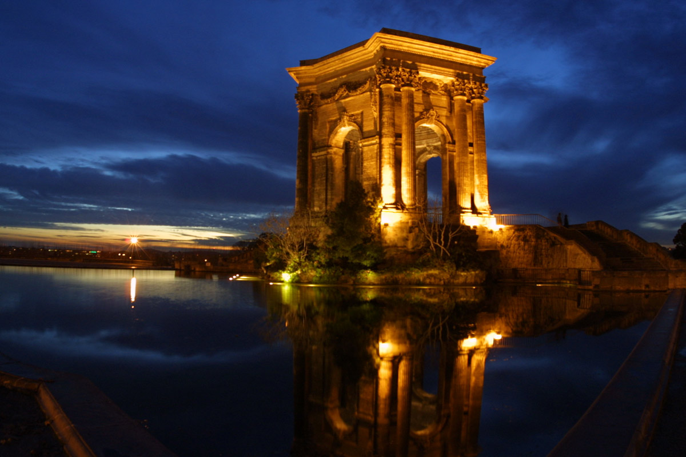

LOCAL PHOTO LAB · 003
一张照片装不下的明暗，怎样用三次曝光合成？
01
准备三张照片
保持构图不变，依次拍暗、正常、亮。
等待三张照片
准备中0%
02
融合完成
这是曝光融合，不是绝对 HDR。运动保护只能减少重影，不能恢复被遮挡的内容。

LOCAL PHOTO LAB · 003
保持构图不变，依次拍暗、正常、亮。
这是曝光融合，不是绝对 HDR。运动保护只能减少重影，不能恢复被遮挡的内容。